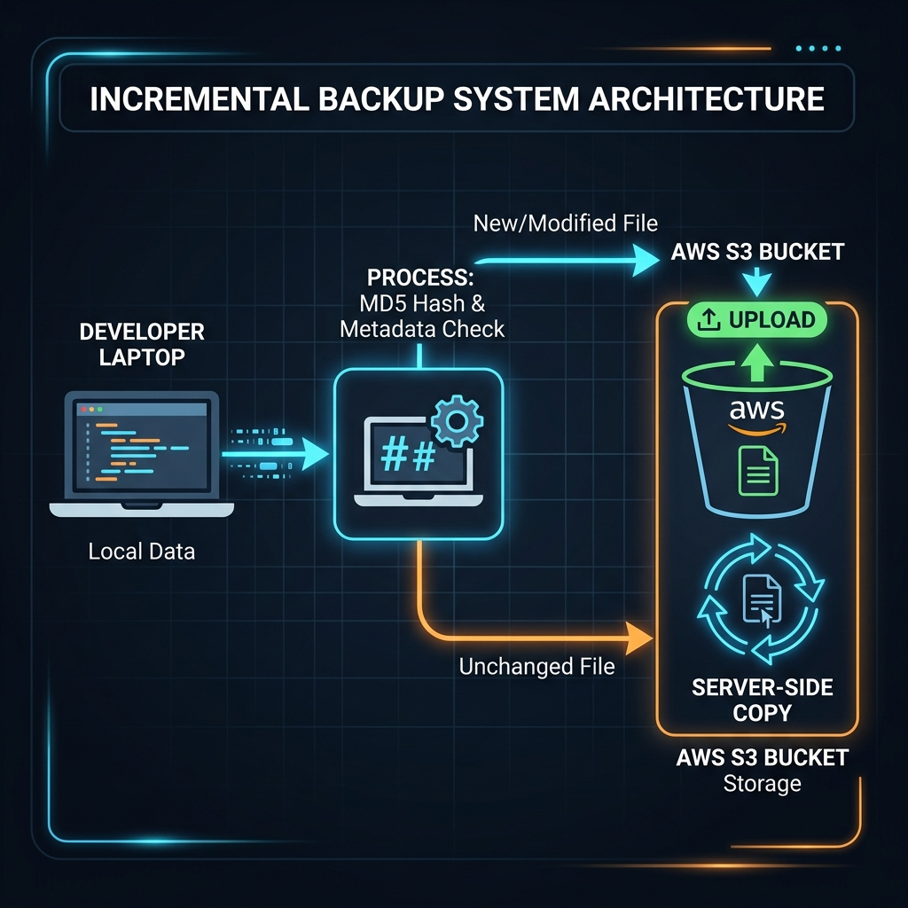

A production-grade CLI utility for intelligent, incremental backups to AWS S3 — with MD5 metadata injection, AES-256 encryption, and automated lifecycle management.
Built from the ground up to handle real-world backup scenarios with the reliability your data deserves.
Compares local MD5 hashes against S3 metadata to detect changes. Unchanged files are copied server-side — zero re-upload bandwidth wasted.
Every backup lives in its own YYYY-MM-DD_HH-MM-SS prefix. No overwrites, no conflicts — clean point-in-time recovery.
AES-256 (SSE-S3) enabled by default. Optional AWS KMS support for organizations requiring customer-managed encryption keys.
Auto-transitions backups: Standard → Standard-IA (30d) → Glacier (90d) → Expiration (365d). Set once, save continuously.
Exponential backoff with configurable retry logic wraps every S3 operation. Network blips won't derail your backup.
Preview exactly which files will upload and which will skip — without touching a single AWS API. Perfect for validation.
Four focused modules, each with a single responsibility. No monoliths here.

The subtle engineering decision that makes this tool reliable at any scale.
A naive approach compares local MD5 against S3's ETag. This works for small, single-part uploads — but completely fails for multipart uploads. Multipart ETags use a "hash of hashes" format that can't be compared to a standard MD5.
We calculate the local MD5 and inject it into S3 metadata under the key x-amz-meta-file-md5 on every upload. Subsequent backups fetch this metadata — guaranteeing 100% reliable change detection regardless of upload method or file size.
Upload, download, and manage lifecycle — all from your terminal.
Recursively scans a directory, computes MD5 metadata, and performs an incremental upload to S3.
Downloads a specific backup using S3 pagination — fully supporting directories with 1000+ files.
Applies the pre-configured data retention and cost-optimization lifecycle rules to your S3 bucket.
From clone to first backup in under two minutes.
Grab the repo and install the lightweight Python dependencies.
Set your S3 bucket via CLI flags, environment variables, or a .env file.
Run your first incremental backup with full encryption and logging.